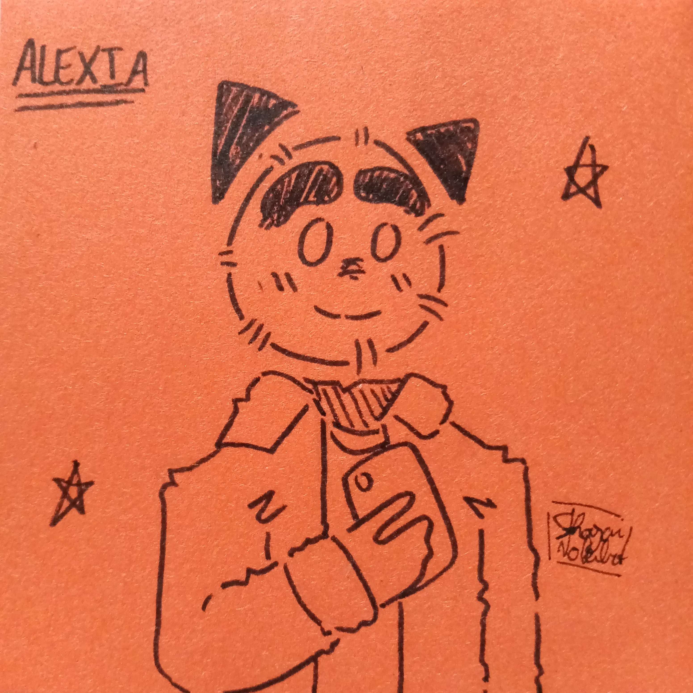

	

		<?php
    // Include the menu
    include '../../../menu.php';

    // Get the current URL of the executing script
    $currentUrl = $_SERVER['PHP_SELF'];

    // Extract the directory path from the URL
    $menuDirectory = rtrim(dirname($currentUrl), '/'); // Remove trailing slashes

    // Function to convert relative URLs to absolute URLs based on the menu directory
    function makeAbsoluteUrl($url, $menuDir) {
        if (strpos($url, '/') === 0) {
            return $url; // URL is already absolute
        } else {
            return $menuDir . '/' . $url;
        }
    }
    ?>

    <!-- Modify the links in the menu using the $menuDirectory variable -->
    <script>
        document.addEventListener('DOMContentLoaded', function() {
            const menuLinks = document.querySelectorAll('#main-nav-wrap a');
            const menuDirectory = '<?php echo $menuDirectory; ?>';

            for (const link of menuLinks) {
                link.href = makeAbsoluteUrl(link.href, menuDirectory);
            }
        });
    </script>

			


	<!-- content
   ================================================== -->
	<section id="content-wrap" class="blog-single">
		<div class="row">
			<div class="col-twelve">

				<article class="format-standard">

					<div class="content-media">
						<div class="post-thumb">
							
						</div>
					</div>

					<div class="primary-content">

						<h1 class="page-title">Le chiffre du Mois</h1>

						<ul class="entry-meta">
							<li class="date">Décembre-Janvier 2022-2023</li>
							<li class="cat"><a href="">Monde</a></li>
						</ul>

						<p class="lead">Alors que la population sur terre ne fait qu'augmenter, faisons un petit bilan :
						</p>

						<p class="drop-cap">Alors que la population mondiale était d'environ 3.034 milliards d'individus
							en 1960, elle atteignait en décembre dernier les 8,005 milliards de personnes soit une
							augmentation de 163 %.
						</p>

						<p>Même si 25 % seulement d'entre elles sont des enfants, voilà qui ne doit pas simplifier le
							travail du père Noël.</p>

						<p class="tags" style="position:relative; padding-top:85px;">
							<span>Tags :</span>
							<a href="#">monde</a><a href="#">chiffre du mois</a><a href="#">décembre-janvier
								2022-2023</a><a href="#"></a>
						</p>

						<div class="author-profile">
							

							<div class="about">
								<h4><a href="#">Alexia</a></h4>

								<p>A rajouter
								</p>

								<ul class="author-social">
									<li><a href="#">Facebook</a></li>
									<li><a href="#">Twitter</a></li>
									<li><a href="#">GooglePlus</a></li>
									<li><a href="#">Instagram</i></a></li>
								</ul>
							</div>
						</div> <!-- end author-profile -->

					</div> <!-- end entry-primary -->

					<div class="pagenav group">
						<div class="prev-nav">
							<a href="Carte_Didentite_du_Mois.html" rel="prev">
								<span>Précédent</span>
								Carte d'identité du Mois
							</a>
						</div>
						<div class="next-nav">
							<a href="Actu_Insolite.html" rel="next">
								<span>Suivant</span>
								Actu Insolite
							</a>
						</div>
					</div>

				</article>


			</div> <!-- end col-twelve -->
		</div> <!-- end row -->


		<!-- footer
   ================================================== -->
		<footer>

			<div class="footer-main">

				<div class="row">

					<div class="col-four tab-full mob-full footer-info">

						<h4>A Propos</h4>

						<p>
							Ce site est un projet ayant pour but de mettre en avant nos articles, nos parutions le plus
							possible sans avoir de pubs ni de dérangements particuliers,
							bonne lecture
						</p>

					</div> <!-- end footer-info -->

					<div class="col-two tab-1-3 mob-1-2 site-links">

						<h4>Liens autres</h4>

						<ul>
							<li><a href="http://lyceeernestperochon.cc-parthenay.fr/">Site du Lycée</a></li>
							<li><a href="../../../about.html">A Propos de nous</a></li>
							<li><a href="../../../team.html">L'équipe</a></li>
							<li><a href="https://fr.calameo.com/read/00697949092f1ebdab474">Dernière Parution (PDF) </a>
							</li>
							<li><a href="#"></a></li>
						</ul>

					</div> <!-- end site-links -->

					<div class="col-two tab-1-3 mob-1-2 social-links">

						<h4>Réseaux sociaux</h4>

						<ul>
							<li><a href="https://www.instagram.com/club_zoomsurlessciences/">Instagram</a></li>
							<li><a href="https://github.com/just-jerem/just-jerem">Github</a></li>
							<li><a href="#">Dribbble</a></li>
							<li><a href="#">Google+</a></li>
							<li><a href="#">Instagram</a></li>
						</ul>

					</div> <!-- end social links -->

				</div> <!-- end footer-main -->

				<div class="footer-bottom">
					<div class="row">

						<div class="col-twelve">
							<div class="copyright">
								<span>© Copyright Abstract 2016</span>
								<span>Design by <a href="http://www.styleshout.com/">styleshout</a></span>
							</div>

							<div id="go-top">
								<a class="smoothscroll" title="Back to Top" href="#top"><i
										class="icon icon-arrow-up"></i></a>
							</div>
						</div>

					</div>
				</div> <!-- end footer-bottom -->

		</footer>

		<div id="preloader">
			<div id="loader"></div>
		</div>

		<!-- Java Script
   ================================================== -->
		<script src="../../../js/jquery-2.1.3.min.js"></script>
		<script src="../../../js/plugins.js"></script>
		<script src="../../../js/main.js"></script>

</body>

</html>